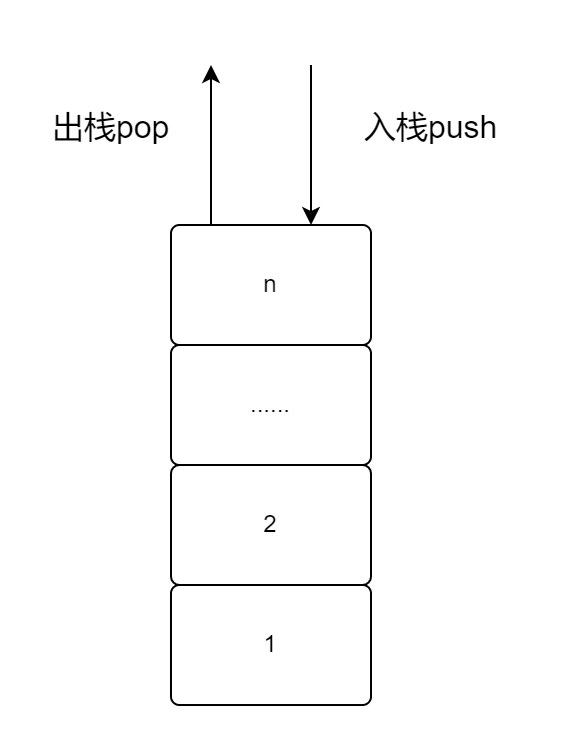

数据结构_05：栈
栈的概念
汉语中对栈字的解释是存储货物或供旅客住宿的房屋，对应的，在计算机中栈指的是数据暂时存储的地方。
栈的特点，就像我们玩的俄罗斯方块一样，我们只能在最顶部进行操作。对此，我们总结为先进后出、后进先出。
对此，我们可以有流程图便于理解：

顺序表实现栈
栈的实现可以基于顺序表或是链表，这里我们先用顺序表实现，这里我们需要实现两个新的功能：
- 入栈（push）：入栈操作，向栈中压入一个新的元素；
- 出栈（pop）：出栈操作，从栈顶取出一个元素。
定义结构体
这里我们基于顺序表设计，即：
1 | struct stack |
初始化
这里我们基于顺序表设计，即：
1 | typedef struct stack* arraystack; |
扩容
在正式开始设计入栈功能之前，我们可以预料到在入栈时可能会产生容量不够的情况，故我们可以先设计扩容功能，即：
1 | int extendstack(arraystack stack_) |
入栈
由于栈只能从尾部插入，所以入栈操作实现起来非常简单，同时我们需要用上刚刚设计好的扩容，即：
1 | int pushstack(arraystack satck_, int element) |
判空
在出栈之前，我们需要判断一下栈是否为空，即：
1 | int isempty(arraystack stack_) |
出栈
出栈操作便更加简单了，只需要将栈顶元素取出即可，即：
1 | int popstack(arraystack stack_) |
共享栈
为了提高栈的利用率，我们可以将一个固定长度的数组共享给两个栈来使用，将数组的两头作为两个栈的栈底，当两个栈的栈顶想要时表示栈已满。
链表实现栈
在上文中我们介绍了用顺序表实现栈，然而在实际中，使用链表来实现栈会显得更加方便。
我们规定链表表头指向栈顶，而栈顶指向后续的元素直至栈底。
每当有新的元素入栈，我们只需要在链表头部插入新的结点即可。
初始化
有链表作为基础，我们可以很容易初始化，即：
1 | struct listnode |
入栈
有链表作为基础，我们可以很容易的入栈，即：
1 | int pushstack(Node head, int element) |
判空
在出栈之前我们需要判断栈是否为空，和链表类似的，我们只需要看头结点即可，即：
1 | int isempty(Node head) |
出栈
有上文和链表作为基础，我们可以很容易实现出栈，即：
1 | int popstack(Node head) |
总结
栈本质上是基于前面所说的两种线性表的一种特殊线性表，有前面的学习作为基础，在学习时并不会产生多大困难。
相似的，下一节所讲的队列也是一种特殊的线性表。
返回目录
你可以点击此处返回或查看目录。